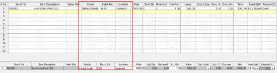
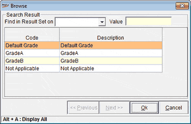
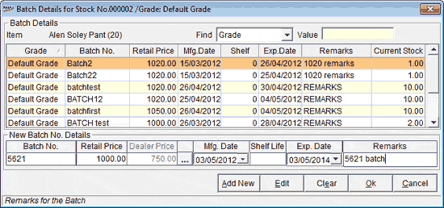
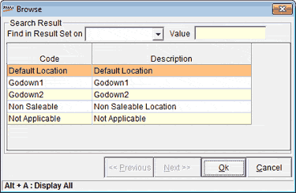

The Batch, Grade and Location enable Return without Reference screen is displayed as shown.

Grade: If different grades are available for the selected SKU, then the grade browse window is displayed as shown.

Search Results: Helps to search grade.
Find Result Set on: Select the search based on BatchNo., Retail Price, Mfg. Date, Shelf Life, Exp. Date, Remarks, Current Stock.
Value: Enter the search key
Code and Description: Displays the grade code and description according to the search. Select the desired grade for billing.
Batch: If batches are available for the selected SKU, then the batch will be displayed in the grid. New batch can be added in the New Batch No. Details grid.
The Batch selection window is displayed as shown.

Find: Select the search based on BatchNo., Retail Price, Mfg. Date, Shelf Life, Exp. Date, Remarks, Current Stock.
Value: Enter the search key
Grid: Displays the batch details according to the search. Select the desired batch for return.
New Batch No. Details: Enter the batch details
Location: Displays the location browse window. Select the location to store the returned item(s).

Search Results: Helps to search location.
Find: Select the search based on Code or Description.
Value: Enter the search key
Code and Description: Displays the catalogued location's code and description. Select the desired location.
Note: If return of item(s) is selected as Non Saleable location, then sales of that item(s) can be restricted if configured in System Parameter.